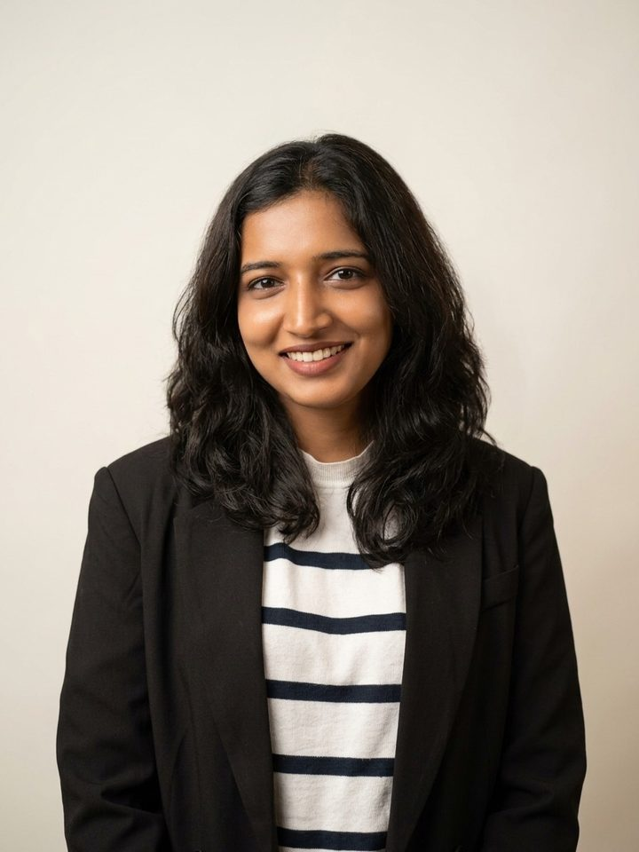
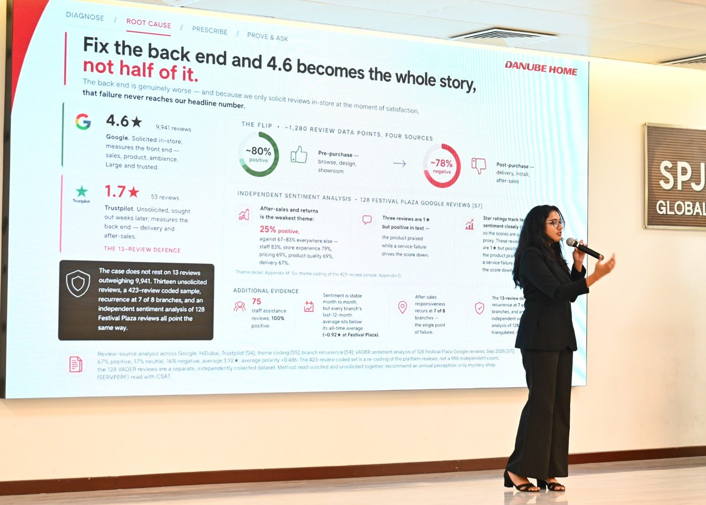
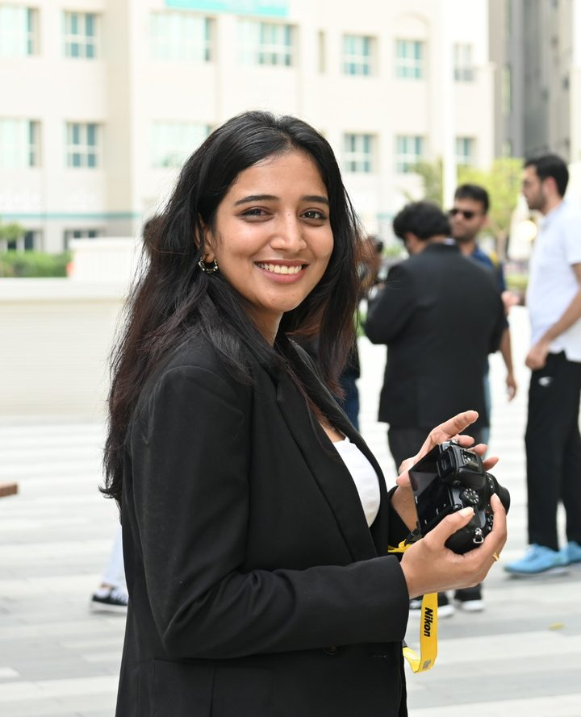

3.5 years at ZS Associates with US clients. Global MBA, SP Jain (CGPA 9.2). Aerospace engineer by training. Looking for management consulting and strategy roles in the UAE, the Netherlands and Ireland.

Start here
What do you need solved?
Pick the closest one and the work most relevant to it moves to the top.
Selected work
Four pieces of work, each with a result
Best match
PRICING AND REVENUE STRATEGY | ZS ASSOCIATES, TRAVEL AND HOSPITALITY | 2022 TO 2024
Hotel pricing: running a USD 24M+ portfolio and building the tool 150 revenue managers used
I ran daily pricing for 15 US hotels worth USD 24M+ a year, lifted NPS 60% in two years, and built a decision tool used by about 150 revenue managers. ZS later sold it to the client as a product.
Read the case
What I did
Owned daily pricing for the 15-property portfolio and built analytics to identify demand patterns that supported the rate decisions.
Set the year's highest room rate, USD 999, ahead of the 2024 solar eclipse, and repriced overnight for a major concert.
Built NPS dashboards across Expedia, Booking.com and Agoda that are still in use.
Built a decision-support tool in Power BI and Power Apps for about 150 revenue managers.
What it shows
Pricing judgement backed by data, not by habit.
Turning one team's workaround into a product other people choose to use.
Growing with the work: I mentored 7 associates and 10+ mentees as the team grew from 30 to 150+.
Best match
FINANCIAL MODELLING AND SIMULATION | LIVE CLIENT ENGAGEMENT, SP JAIN MBA | TEAM OF FOUR
Testing an AI data-centre expansion across thousands of possible futures
For a UAE AI-infrastructure operator, I researched the supply side, built and verified the financial model, and designed a simulation suite that tested the expansion across thousands of possible futures. Try a toy version below.
Read the case
The client's own choices were never treated as random. Each decision ran twice on the same set of simulated futures and the difference was reported, so the firm's decisions did not show up as weather in the ranking of risks.
The simulation suite
Monte Carlo with correlation: 5,000 futures for the UAE tranche and 3,000 per international market, 26 uncertain variables plus 6 discrete events, linked through three world factors so demand, hardware and financing moved together.
Scenario analysis: ten coherent futures, such as credit tightening, grid constraints and export controls, each moving several dials at once.
Paired runs on identical draws for every client decision.
Sensitivity and tornado ranking of what swings value most.
Alongside the simulations
Four-corner stress test of the energy model.
Weight sensitivity in the market screening, including separate weights for greenfield and brownfield entry.
Joint-threshold analysis: the conditions together, not one variable at a time, that make the programme work.
Reference class forecasting on eight failure cases, and real options framing for staged capital.
Client name and results withheld. Methods shown as designed and run by me.
Best match
CUSTOMER EXPERIENCE DIAGNOSIS | LIVE CLIENT ENGAGEMENT, SP JAIN MBA | CO-LED
Danube Home: why a 4.6 star rating hid the real problem
I co-led a diagnosis built on 1,280+ data points from four review sources. It showed the headline rating measured only the front end of the customer journey, and the CEO called the work practical.

Presenting the Danube Home findings at SP Jain Global.Read the case
What the data said
Google showed 4.6 stars on 9,941 reviews, collected in store at the moment of satisfaction. Trustpilot, collected weeks later, showed 1.7.
Before purchase, about 80% of comments were positive. After purchase, about 78% were negative.
After-sales was the weakest theme, with only 25% positive comments, and the problem recurred at 7 of 8 branches.
How the case was made
A 423-review coded sample, an independent sentiment analysis of 128 Google reviews, and branch-level recurrence checks all pointed the same way.
Recommendation: fix the back end, and measure it, so the headline number tells the whole story.
Best match
DECISION ANALYTICS | ZS ASSOCIATES, PHARMACEUTICAL | 2024 TO 2025
Pharma analytics: a content optimisation lifted engagement 80%, and AI that people adopted
After reporting showed a brand's content needed work, I built the optimisation logic in SQL and designed the campaign: engagement rose 80% and prescription volume 30%.
Read the case
What I did
Led commercial analytics across 10+ pharmaceutical brands with a team of eight, delivered 100% on time, and presented to brand directors.
Co-led the design and ROI analysis of a test-and-control campaign for 3,000 prescribers who had not responded for two years. Engagement rose 75%.
Pitched an AI creative engine that tailors each message to a prescriber's preferred format, as part of the client pitch. The client liked it.
AI that was adopted
Trained and helped deploy a generative AI assistant for navigating dashboards, calibrated on industry terminology. It cut recurring manual reporting 85% across 50+ Power BI dashboards.
Helped build the Customer Engagement Index, then led its refinement to replace fragmented reporting.
Also
Cooling the Cloud
Led my team to the grand final of the ECOVERSE 2026 inter-university sustainability case competition against 10+ teams. Owned the technical solution and the water versus carbon analysis.
Conversational AI for a global software company
Helped design the solution architecture, prioritised use cases, and co-wrote the client report with a phased roadmap and go or no-go criteria.
Markstrat strategy simulation
Owned group strategy for a team that placed 1st of 11+. A conjoint-based price correction and a targeting change doubled one brand from USD 30M to USD 62M.
Generative AI in professional services
Applied research across Asia Pacific: nine expert interviews coded at 87% inter-coder reliability, and a framework written from them.
How I think
Decide on the range, not the average
A single forecast hides risk. This toy model shows the idea behind my simulation work: run thousands of futures where the inputs move together, then find the conditions where the plan still works.
Share of 3,000 simulated futures that meet both
0%
Illustrative only. The ranges are made up to show the method and are not client data. Prices and costs are correlated, as in real markets.
Journey
From aerospace engineering to strategy consulting
Aug 2018 to Aug 2022B.Tech, Aerospace EngineeringR V College of Engineering, Bengaluru. Designed and built UAVs, and led sponsorship for the aerospace club.
Mar 2022 to Aug 2022Intern, ZS AssociatesCoached 150+ hotels through a system change and converted 20+ properties to paid service tiers.
Sep 2022 to Jun 2024Decision Analytics Associate, Travel and HospitalityHotel pricing, the NPS programme and the decision tool.
Jul 2024 to Dec 2024Decision Analytics Associate, PharmaceuticalPromoted to Associate Consultant within six months.
Jan 2025 to Sep 2025Associate Consultant, PharmaceuticalLed 10+ brands and a team of eight.
Oct 2025 to Oct 2026Global MBA, SP Jain School of Global ManagementSingapore and Dubai. CGPA 9.2. Live client work in data-centre strategy and customer experience.
NextManagement consulting and strategyUAE, the Netherlands and Ireland.

About
Structured thinking, practical answers
I started in aerospace engineering, where a design either flies or it does not. That habit of testing an idea against reality stayed with me. At ZS Associates I spent 3.5 years with US clients in travel and hospitality and pharmaceuticals, learning to turn data into a recommendation a director can act on.
In my Global MBA at SP Jain I have worked on live client projects, from simulating a data-centre expansion to diagnosing a retailer's customer experience. I speak English, Hindi and Kannada, and I am learning Spanish.
Structured problem solving
Pricing
Financial modelling
Monte Carlo simulation
SQL
Power BI
Customer experience
Generative AI
Client-ready decks and reports
Contact
Let's talk
I am looking for management consulting and strategy roles in the UAE, the Netherlands and Ireland, and I am happy to share more detail on any case here.